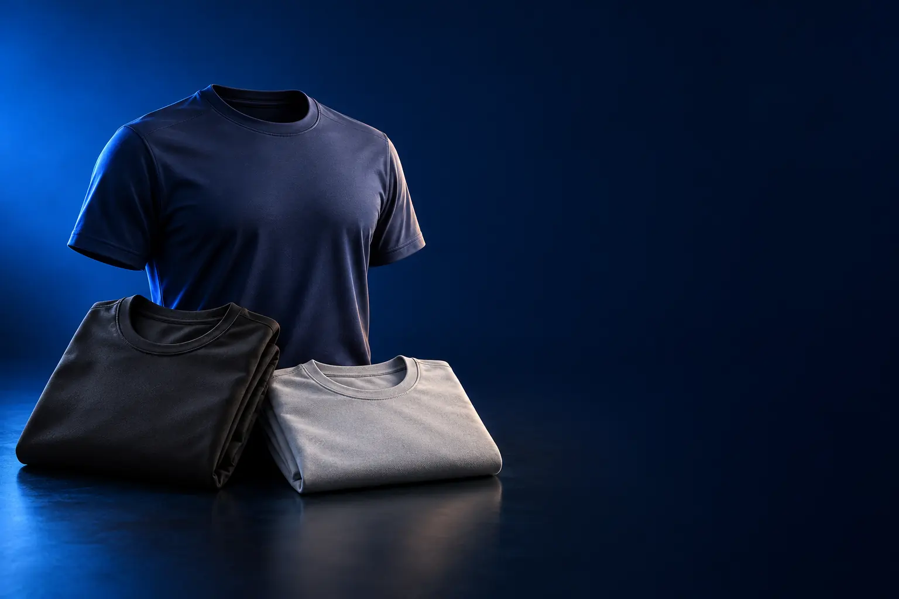

ACADEMIA E TREINO
Melhor camiseta dry fit custo-benefício para academia e treino
Tecido que tira o suor da pele e seca rápido. Não gruda no corpo no meio do treino.

Melhor custo-benefício para treinoMuvin Dry Basic FPS 50 (masculina)
CURADORIA TECHAPROVADO · 2026
A dry fit da academia, a camiseta que não amassa do trabalho e a de proteção UV da corrida usam tecidos diferentes. Separamos 9 modelos em 3 perfis, do custo-benefício ao top de linha, e dizemos para quem cada um vale a pena.

NOSSA LEITURA
Poliéster seca rápido; modal é macio e não amassa; UV50+ protege do sol. Pense em quanto tempo ela fica no corpo e onde. Nesta categoria, a oferta confiável na loja é pequena, então a lista é curta de propósito.
COMECE POR AQUI
ACADEMIA E TREINO
Tecido que tira o suor da pele e seca rápido. Não gruda no corpo no meio do treino.
DIA INTEIRO (TRABALHO E VIAGEM)
Do trabalho ao happy hour com a mesma peça: não amassa, não desbota e segura o cheiro.

TREINO AO AR LIVRE E SOL
Para correr, pedalar e trabalhar no sol: proteção UV50+ e tecido que refresca.

A FICHA, TRADUZIDA
01 - TECIDO
O poliéster é a fibra das camisetas de treino: não absorve água, espalha o suor e seca rápido. O modal é uma fibra feita da celulose da madeira, macia como algodão, que não amassa e cai bem no corpo.
Para treino no calor, poliéster. Para usar o dia inteiro, do trabalho ao jantar, modal ou misturas com elastano. Algodão puro é confortável, mas encharca e demora a secar.
Elastano em pouca quantidade (5% a 10%) dá elasticidade e ajuda a peça a voltar ao formato.
02 - ANTIODOR
O suor em si quase não tem cheiro: o odor vem das bactérias que se alimentam dele no tecido. O tratamento antiodor (ou antimicrobiano) dificulta a vida dessas bactérias.
Faz diferença em quem usa a mesma peça por muitas horas ou viaja com pouca roupa. Para uma hora de academia, uma camiseta comum lavada logo depois resolve.
Com o tempo e as lavagens, o tratamento perde força. Lave do avesso e evite amaciante, que cobre as fibras e reduz o efeito.
03 - PROTEÇÃO UV
O fator UV (ou FPS) diz quanto da radiação do sol atravessa o tecido. UV50+ significa que menos de 2% dos raios passam: é o nível mais alto da classificação.
Para quem corre, pedala ou trabalha no sol, a camiseta UV protege a pele coberta sem protetor. A manga longa protege também os braços.
Camiseta molhada ou esticada protege menos. E lembre do protetor no rosto, no pescoço e nas mãos.
04 - CUIDADOS
Tecidos técnicos não gostam de calor: lave em água fria, do avesso, sem amaciante, e seque à sombra. Nada de secadora quente ou ferro em temperatura alta.
Amaciante entope os poros do tecido e acaba com a secagem rápida e o antiodor. Alvejante desbota e enfraquece as fibras.
Seguindo esses cuidados, uma boa camiseta técnica dura anos com o mesmo toque.
A CURADORIA EM DETALHE
9 modelos da pesquisa
PERFIL · 3 MODELOS, DA ENTRADA AO TOP DE LINHA
Para academia, funcional e corrida: tecido sintético que espalha o suor para evaporar rápido e não gruda no corpo. Aqui a diferença entre as marcas está no toque do tecido e em quanto tempo ela continua boa depois de muitas lavagens.
TREINO · CUSTO-BENEFÍCIO 1 de 3
Melhor custo-benefício para treino
100% poliéster · Dry · FPS 50
Ver preço na AmazonPOR DENTRO DA ESCOLHA
O básico que funciona: 100% poliéster com tecnologia Dry, que espalha o suor na superfície do tecido para evaporar rápido, e proteção solar FPS 50. É leve e não gruda no corpo.
Se o seu uso é academia comum, pode parar por aqui.
| Composição | 100% poliéster |
|---|---|
| Tecnologia | Dry (secagem rápida) |
| Proteção solar | FPS UV 50+ |
| Manga | Curta |
| Lavagem | Máquina |
Fonte: ficha e descrição do anúncio, conferidas em 02/11/2026. Dados informados pelo fabricante.

TREINO · INTERMEDIÁRIO 2 de 3
Fastdry · respirável · treino e dia a dia
Ver preço na AmazonPOR DENTRO DA ESCOLHA
Tecnologia Fastdry, que absorve o suor e seca rápido, em malha interlock respirável. A Speedo indica para atividade física e também para a rotina.
O passo acima da Muvin é a malha interlock, de toque mais firme e durável.
| Tecnologia | Fastdry |
|---|---|
| Malha | Interlock |
| Uso | Treino e dia a dia |
Fonte: ficha e descrição do anúncio, conferidas em 02/11/2026. Dados informados pelo fabricante.

TREINO · TOP DE LINHA 3 de 3
Top de linha para treino
Tecido UA Tech · seca rápido
Ver preço na AmazonPOR DENTRO DA ESCOLHA
O tecido UA Tech é macio, leve e seca rápido.
É a referência mundial de camiseta de treino. O que se paga é a durabilidade e o caimento.
| Tecido | UA Tech |
|---|---|
| Secagem | Rápida |
| Uso | Treino |
Fonte: ficha e descrição do anúncio, conferidas em 02/11/2026. Dados informados pelo fabricante.
PERFIL · 3 MODELOS, DA ENTRADA AO TOP DE LINHA
Camisetas tecnológicas para usar o dia inteiro: tecidos que não amassam, não desbotam e têm tratamento antiodor. Servem para trabalho, viagem e para quem quer parecer arrumado sem passar roupa.

DIA A DIA · ENTRADA 1 de 3
Não amassa · antiodor · UV50+ · não desbota
Ver preço na AmazonPOR DENTRO DA ESCOLHA
Tecido Non-Wet, que repele líquidos, com antiodor, proteção UV50+, memória de forma (não amassa) e dispersão de calor. Seca rápido e não desbota, segundo a marca.
Junta numa peça o que as camisetas de treino e as de dia a dia fazem separadas, por um preço de entrada.
| Recursos | Non-Wet, antiodor, não amassa, não desbota |
|---|---|
| Proteção solar | UV50+ |
| Extras | Shape Memory, dispersão de calor |
Fonte: ficha e descrição do anúncio, conferidas em 02/11/2026. Dados informados pelo fabricante.
DIA A DIA · CUSTO-BENEFÍCIO 2 de 3
Melhor custo-benefício para o dia a dia
Modal · antiodor · desamassa no corpo
Ver preço na AmazonPOR DENTRO DA ESCOLHA
O tecido Intech, de modal (fibra de origem natural, mais macia que o algodão) com elastano, desamassa no corpo, não desbota e tem tratamento antiodor. A Insider fabrica em São Paulo.
É a camiseta tecnológica mais conhecida do Brasil.
| Composição | 92% modal, 8% elastano |
|---|---|
| Tecido | Intech |
| Recursos | Antiodor, desamassa, não desbota |
| Gola | V |
Fonte: ficha e descrição do anúncio, conferidas em 02/11/2026. Dados informados pelo fabricante.

DIA A DIA · ALTERNATIVA 3 de 3
Outro caminho: gola careca
Mesmo tecido Intech · gola careca
Ver preço na AmazonPOR DENTRO DA ESCOLHA
A mesma Tech T-Shirt da Insider, com gola U (careca), que combina mais com blazer e camisa aberta por cima.
A diferença de preço para a gola V vem da cor e do tamanho, não do tecido.
| Tecido | Intech (Insider) |
|---|---|
| Recursos | Antiodor, desamassa, não desbota |
| Gola | U (careca) |
Fonte: ficha e descrição do anúncio, conferidas em 02/11/2026. Dados informados pelo fabricante.
PERFIL · 3 MODELOS, DA ENTRADA AO TOP DE LINHA
Para quem treina ou passa horas no sol: além de secar rápido, estas camisetas têm proteção solar UV50+, que bloqueia a maior parte dos raios. As de manga longa protegem também os braços.
AO AR LIVRE · CUSTO-BENEFÍCIO 1 de 3
Melhor custo-benefício para treino ao ar livre
4 peças · dry-fit · proteção UV
Ver preço na AmazonPOR DENTRO DA ESCOLHA
Kit com 4 camisetas dry-fit com proteção UV, para ter uma limpa todo dia de treino.
O custo por peça é o mais baixo da seleção.
| Quantidade | 4 camisetas |
|---|---|
| Tecido | Dry-fit |
| Proteção | UV |
Fonte: ficha e descrição do anúncio, conferidas em 02/11/2026. Dados informados pelo fabricante.

AO AR LIVRE · AVANÇADO 2 de 3
Manga longa · UV50+ · antiodor · não amassa
Ver preço na AmazonPOR DENTRO DA ESCOLHA
A Non-Wet de manga longa: protege braços com UV50+, tem antiodor, não amassa, dispersa o calor e seca rápido.
A manga longa é a melhor proteção solar que uma camiseta pode dar, sem precisar de protetor nos braços.
| Manga | Longa |
|---|---|
| Proteção solar | UV50+ |
| Recursos | Non-Wet, antiodor, não amassa |
Fonte: ficha e descrição do anúncio, conferidas em 02/11/2026. Dados informados pelo fabricante.

AO AR LIVRE · TOP DE LINHA 3 de 3
Top de linha para treino ao ar livre
Outlast · UV50+ · antimicrobiana
Ver preço na AmazonPOR DENTRO DA ESCOLHA
A versão de treino da Insider: tecido Outperform com tecnologia Outlast, que absorve o excesso de calor do corpo e devolve quando você esfria, mais UV50+, secagem rápida e tratamento antimicrobiano e antiodor. O tecido é biodegradável.
Soma o que as outras fazem separadas, com regulação térmica. Para academia com ar-condicionado, a diferença é pequena.
| Tecido | Outperform com Outlast |
|---|---|
| Proteção solar | UV50+ |
| Recursos | Regulação térmica, antimicrobiano, antiodor |
| Sustentabilidade | Biodegradável |
Fonte: ficha e descrição do anúncio, conferidas em 02/11/2026. Dados informados pelo fabricante.
Nenhum modelo encontrado. Tente outro termo ou volte para Todos.
LADO A LADO
| Modelo | Perfil | Posição | Tecido | Destaque |
|---|---|---|---|---|
| Muvin Dry Basic FPS 50 (masculina) | Treino | Custo-benefício | Dry (secagem rápida) | 100% poliéster · Dry · FPS 50 |
| Speedo Interlock | Treino | Intermediário | Fastdry | Fastdry · respirável · treino e dia a dia |
| Under Armour UA Tech 2.0 | Treino | Top de linha | UA Tech | Tecido UA Tech · seca rápido |
| Dial Cyclo Dry Non-Wet | Dia a dia | Entrada | Non-Wet, antiodor, não amassa, não desbota | Não amassa · antiodor · UV50+ · não desbota |
| Insider Tech T-Shirt Gola V | Dia a dia | Custo-benefício | Intech | Modal · antiodor · desamassa no corpo |
| Insider Tech T-Shirt Gola U | Dia a dia | Alternativa | Intech (Insider) | Mesmo tecido Intech · gola careca |
| Sandrini kit 4 camisetas dry-fit UV | Ao ar livre | Custo-benefício | Dry-fit | 4 peças · dry-fit · proteção UV |
| Dial Cyclo Manga Longa UV50+ | Ao ar livre | Avançado | Non-Wet, antiodor, não amassa | Manga longa · UV50+ · antiodor · não amassa |
| Insider Performance T-Shirt 2.0 | Ao ar livre | Top de linha | Outperform com Outlast | Outlast · UV50+ · antimicrobiana |
CONSIDERAÇÕES FINAIS
Nesta categoria, a oferta confiável na loja é pequena: muitos anúncios são importados ou juntam produtos diferentes. Por isso a lista tem 3 modelos por perfil, todos vendidos no Brasil.
Para treino, a Muvin Dry Basic FPS 50. Para o dia a dia, a Insider Tech T-Shirt. Para treino ao ar livre, o kit Sandrini com 4 peças.
É a camiseta de tecido sintético (em geral poliéster) que tira o suor da pele e seca rápido. "Dri-FIT" é o nome da tecnologia da Nike; outras marcas usam nomes parecidos.
Funciona, principalmente no uso prolongado. O efeito diminui com as lavagens, e o amaciante atrapalha.
Na pele coberta, sim. Rosto, pescoço e mãos continuam precisando de protetor.
Porque ele muda várias vezes por dia e varia por cor e tamanho. O botão leva ao valor atualizado na loja.
TRANSPARÊNCIA EDITORIAL
Separamos os perfis pelo uso: treino, dia a dia e treino ao ar livre. Cada modelo precisa responder com clareza "para quem ele é o certo".
Em cada perfil há modelos em faixas de preço diferentes, e cada degrau precisa entregar algo que o anterior não entrega. Dois modelos com a mesma proposta não entram juntos.
Ficha e especificações foram conferidas nos anúncios das lojas em 02/11/2026.
Os links de compra desta página são de afiliado: se você comprar por eles, o TechAprovado pode ganhar uma comissão, sem custo adicional para você. Isso não muda a ordem nem a escolha dos produtos.
📲 GUIAS E DICAS NO SEU FEED
Dicas práticas antes de comprar, em carrosséis e vídeos curtos, sempre com link para o guia completo.